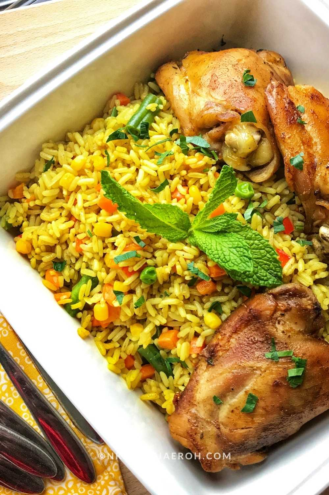

This is typical Nigerian dish rich in natural herbs and spices. It is often accompanied with proteins(most especially fried chicken and fish), coleslaw etc.
A sumptous and pallatable delicacy, eaten with joy and happiness. It is mostly enjoyed with family or with a company of friends.
Cook the rice with chicken stock and little salt until almost done;drain and set aside.
Cook the chicken with onion,seasoning,and water; reserve the stock.
Fry the vegetables (carrots, peas, green beans, sweet corn and pepper briefly in oil).
Add seasoning-curry powder,thyme,stock cube,and a little salt.
Add the cooked rice and stir-fry everything together.
Add some chicken stock if needed, and then stir until the rice is well combined and slightly dry.
Add cooked liver and stir for another 2-3 minutes
Taste and adjust seasoning, then serve.